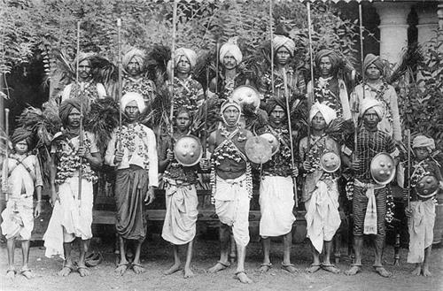
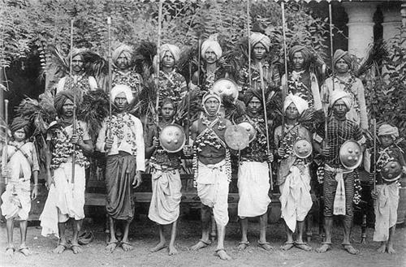

The history of Dadra and Nagar Haveli is a tale of tribal heritage, colonial influence, and liberation, reflecting the unique cultural and political evolution of this small Union Territory in western India.
1. Early History and Tribal Heritage- Ancient Inhabitants: The region has been home to various tribal communities for centuries, including the Warlis, Koknas, and Dhodiyas, who continue to live in the territory today. These tribes have a rich cultural heritage with distinct customs, art, and traditions that are deeply tied to the natural landscape.
- Influence of Maratha Rule: Before European influence, the Marathas had control over much of western India, including areas near Dadra and Nagar Haveli. Although the region wasn’t significantly developed or urbanized, it held strategic value due to its location and resources.
- Portuguese Occupation (1779–1954): The Portuguese established control over Dadra and Nagar Haveli in 1779. They used the region to further their trade and colonial ambitions along the western coast of India. The Portuguese administration focused on consolidating their power and influence in this territory along with nearby Goa and Daman, which they had occupied since the early 16th century.
- Economic Changes: The Portuguese administration in Dadra and Nagar Haveli imposed taxes and labor levies, which affected the local population, primarily the tribal communities. This led to a shift in local economic practices and a disruption in traditional ways of life, as the Portuguese introduced new crops, taxation, and economic policies to serve their colonial interests.
- Rise of Indian Nationalism: The early 20th century saw a rise in Indian nationalist sentiments, which reached Dadra and Nagar Haveli as well. Freedom fighters and nationalist leaders in nearby Gujarat and Maharashtra inspired the locals to resist Portuguese rule.
- Liberation from Portuguese Rule (1954): In 1954, after India had gained independence from British rule, nationalist activists launched a movement to free Dadra and Nagar Haveli from Portuguese control. Indian volunteers from organizations like the Azad Gomantak Dal and the United Front of Goans initiated an uprising that resulted in the liberation of the region from the Portuguese.
- Integration with India: Following the liberation, Dadra and Nagar Haveli operated as a self-governing territory until 1961, when it was formally integrated into the Republic of India as a Union Territory. This integration was part of India’s larger effort to reclaim all territories under foreign control, including Goa, Daman, and Diu, which were annexed in the same year.
.jpeg) 

- Becoming a Union Territory: Dadra and Nagar Haveli was officially made a Union Territory in 1961. Since then, the Indian government has focused on developing the region while preserving its tribal culture and natural resources. Silvassa was established as the capital, and the territory gradually saw improvements in infrastructure, healthcare, and education.
- Industrial Growth: In the late 20th century, the government promoted industrialization in Dadra and Nagar Haveli, offering tax incentives to encourage industries to set up in the region. This led to significant economic growth and attracted people from neighboring states, especially Gujarat and Maharashtra.
- Union Territory of Dadra and Nagar Haveli and Daman and Diu: In January 2020, Dadra and Nagar Haveli was merged with the neighboring Union Territory of Daman and Diu to form a single administrative unit called Dadra and Nagar Haveli and Daman and Diu. This merger was intended to streamline administrative processes and enhance governance.
The history of Dadra and Nagar Haveli is marked by tribal resilience, colonial influence, and post-independence development. From being a Portuguese-controlled territory to becoming part of independent India, Dadra and Nagar Haveli’s journey reflects the region’s adaptability and cultural richness. The local communities have managed to retain their traditions and way of life even as the region has undergone social, economic, and administrative changes over the centuries.